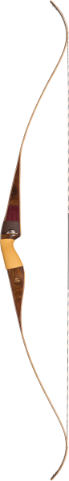

The Best Rated Bear Archery Bows
Bear archery species RTH are one of the best recurve bows available today. However, Fred Bear, the developer of these archery bows took several years to develop a product line for target practice and hunting. Hunters that are looking for hunting bows that will last can check the list of various bear archery species RTH that is available on the market. The brand has a wide range of youth, compound, and recurve bows for all archers. Below are top recommendations for the best archery bows on the market.
Super Kodiak
It was one of the last design of Fred Bear before he died. Fred would go with for various game hunts around the world, and it has always featured as one of the best designs ever. It is a simple, but powerful bear archery Cruzer G2 accented with maple or rosewood and fiberglass. Its grip is fitted with fiberglass accents for higher performance and comfort. Kodiak and bear archery Cruzer G2 ranks among the popular models and features on the list of the best bow for the money any hunter would like to spend on his hunting explorations.

Grizzly
Though the Kodiak was Fred Bear’s career Magnus opus, the Grizzly came in as a classic hit. Grizzly was one of Fred’s favorite bows, and he spent a lot of time to design it. Grizzly is one of the best archeries for re-curve bows. Its riser comprises of a solid maple wood, which is backed with black fiberglass and maple limbs. The right-handed model of Grizzly weighs around 60 pounds, but the left one can’t go beyond 55 pounds. It is a classic bow, and that’s why it features as one of the best bows on the market.
Take-Down Bow
It entered the scene a few years ahead of its time. The Take-Down bow was designed in 1969 and has remained a staple in the world of hunting. It performs well in nearly all fields and packing it is easy. Its customizable options are one of the reasons for its continued popularity. It has two risers, made of either black phenolic, African Bubinga or Black maple, which come in sizes A and B. These bows are also fitted with leather strike plates and hair rests to ensure it lasts through all hunts. When their bear archery BR33 Hybrid limbs are paired with these risers, hunters can back and face their bows with rigid fiberglass. Their arms come in two sizes, where one makes a bow up to 64 inches while the other one bows up to 60 inches. That means hunters can have up to 70 pounds draw weight when using the most potent take-down bow.
Super Magnum
Fred Bear developed super magnum bear archery BR33 Hybrid model in 1966. Super magnum is a short bow that hunters can use to hunt out of ground blinds and tree stands. It is fitted with black fiberglass as well as African Bubinga hardwood for extra strength. It also comes with a 48 inches AMO length and slim grip. Fred Bear also fitted it with a Flemish twist bow string that can last through shine, rain, or hunting trip.
Kodiak
Though it performs pretty well, the Kodiak packs a few punches compared to the Super Kodiak. The model was brought back to the market due to increased demand. Initially, this model wouldn’t have been reproduced, but for the respect of Fred Bear, it was redesigned. Designers felt it was time to re-introduce this brand after customers kept asking for it for a while. It comes in either a Purple Heart beam or a white one, but its risers are made of Bolivian rosewood. Combination of these woods makes the Super Kodiak a useful and elegant bow. Over time, manufacturers realized the need to reinforce this bow with rigid fiberglass to make it more comfortable. Hunters can also order a customized model with either a satin or gloss finish, but both the right and left-hand of this bow can weigh up to 60 pounds.

Patriot
It entered the scene after a collaboration between Bryon Ferguson, a renowned hunter, and trick shot specialist and Fred Bear. The two teamed up to design a unique bow that would perform exemplary well. The bow came with a brown accent stripe and backed with a brown and black hard-rock maple. It also has a supple leather grip and reinforced with white and black fiberglass accents. Unfortunately, Patriot only designs the right-handed models, with a draw weight of up to 55 pounds. It is versatile for any archer and perfect for hunting and trick shots.
Static K-4
It employs old designs, and it’s among the best bow for the money hunters plan to invest. It is a refurbished model of the 1964 static bow model that hunters would use for long hunting trips. Its grip is made with Bolivian rosewood while its risers are reinforced with black and white fiberglass and African Bubinga. It is a 64-inch longbow that can maintain its shape even during draw cycle to provide an extra punch in power. Static K-4 not only have a vintage look but is also a powerful bow. It comes in both the left and right-hand models to meet the needs of all archers. The left-hand model packs a 50-pound draw weight while the right-hand one goes up to 55 pounds.
Cheyenne
It was designed by Grant Neil, the master bowyer of Fred Bear. Grant worked on many bows at Fred Bear’s workshop before retiring. The Cheyenne came after a collaboration between Grant Neil and his son, Byce. It has a limb that has almost similar features as the Take-Down bow. Its grip incorporates the shape of the half-moon, which was the favorite bow for Fred Bear in the early 1960s. Its riser has 2-piece maple that is reinforced with fiberglass. Unfortunately, Cheyenne is only available for right-handed users and has a 55-pound draw weight.
Sonoma Recurve
It is one of the lightest models of bows that work well for both kids and beginners. With a draw weight of up to 40 to 45 pound, Sonoma Recurve is an excellent option for target practice. It is an inexpensive model, but its construction is reliable and solid.